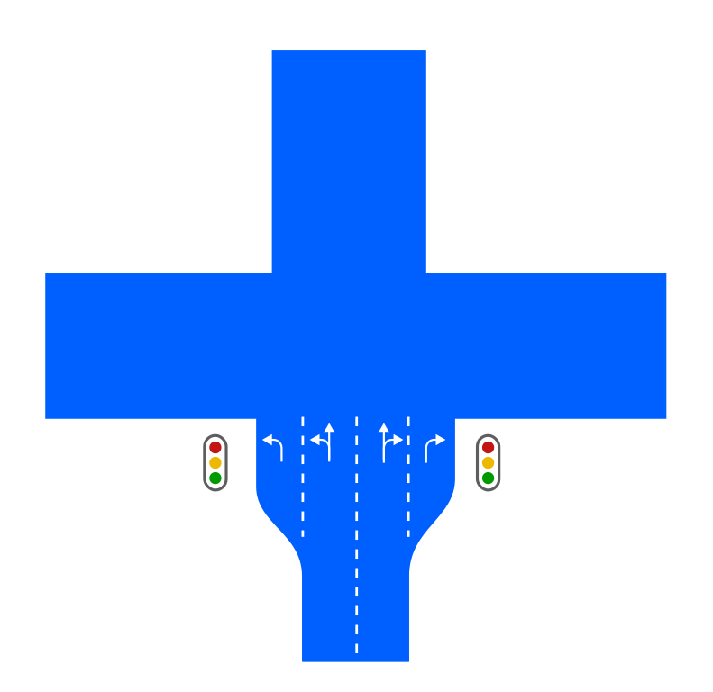
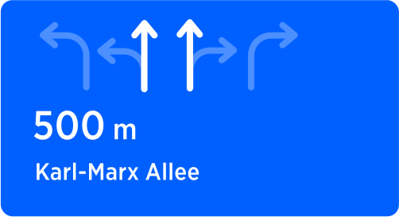
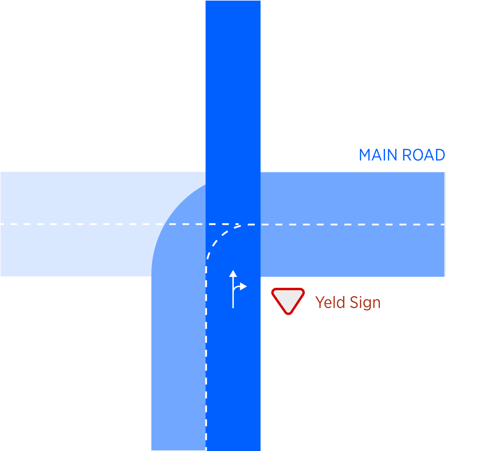
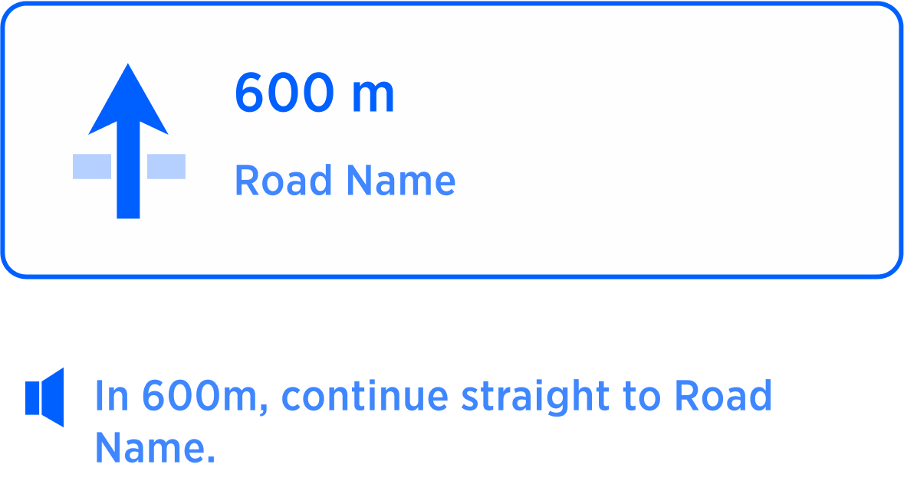
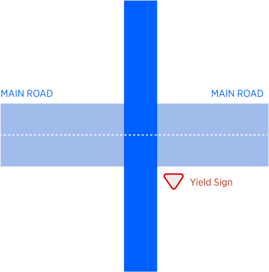
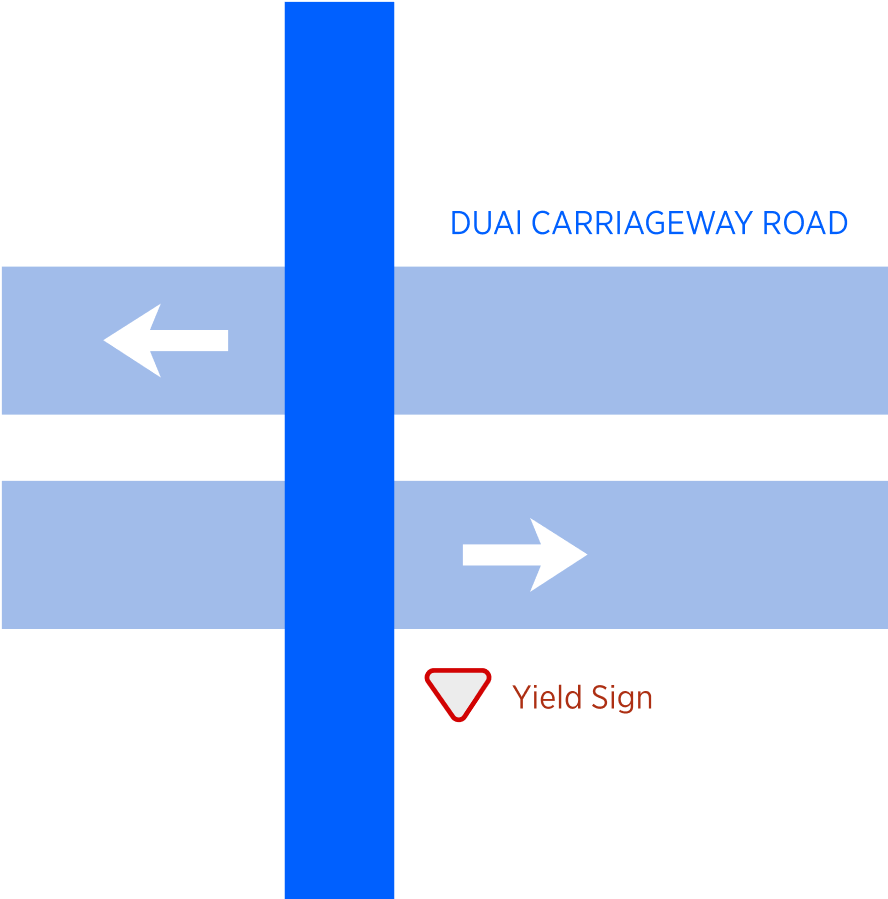

Introduction
Instruction Continue straight is used in situation when continuation of movement in original direction (straight, without a manoeuvre) is not clear due to a road network complexity, and additional guidance is required in order to go simply straight.
This instruction should not be used if:
1. Straight direction is obvious.
2. Outside of junctions, i.e. when road splits into two or more directions via Fork or Exit.
3. On straight segments of the road without junctions or forks.
In this document we will define exact conditions for this instruction to happen as well as conditions for it not to happen or being replaced with other instruction. |
 |
|
|
Conditions for the "Continue Straight" Instruction
There are two groups of scenarios that should trigger Continue Straight instruction. First one is "Crossing Multilane junction" and second "Crossing significant road". Both of them are described below.
Scenario 1 / Crossing Simple Multilane Junction
Simple Junction is a typical traffic figure - intersection of two roads crossing at roughly 90° angle. Those intersections are normally regulated by traffic lights, but could also be unsignalised (without traffic lights) and managed by general traffic rules and road signs.
| CONDITIONS FOR CONTINUE STRAIGHT INSTRUCTION |
1. Simple junction.
2. Junction should allow right or/and left turns.
3. Current road at the point of intersection should have at least 3 lanes.
4. Not all lanes allow for continuation straight. Some of them are dedicated for turns. |
If given conditions are not met, there is no need for any instruction at this junction.
| JUNCTION TOPOLOGY |
CONDITIONS |
INSTRUCTION |
NOTES |
|  |
 At simple junction junction At simple junction junction
At least 3 lanes or more at the entrance point
Not all lanes allow for continuation straight |
Use two middle lanes to continue straight |
Not all lanes allow for continuation straight. |
All lanes go straight
| DIAGRAM |
CONDITIONS |
INSTRUCTION |
NOTES |
 |
At simple junction
Turns are allowed at the junction
At least 3 lanes in at the entrance point
 Not all lanes allow for continuation straight Not all lanes allow for continuation straight |
 |
At this junction all lanes allow straight movement. There is no need for an instruction here. |
Scenario - 2 / Crossing more significant road
This scenario happens on unregulated junctions when crossing a more significant (Main road, if this can be detected) road. E.g vehicle yields to a traffic following on a main road. Following conditions should be met in order for instruction "Continue Straight" to be used.
| EXAMPLE |
CONDITIONS |
|  |
1. Instruction should be given at “Simple junctions” - intersections of two roads with approximate to 90 degree angles, (not including T-junctions).
2. Unregulated Junction - no Traffic lights. One of the the 3 conditions:
3. Main road turns instead of continuing straight, which results in having a yield sign for vehicles that go straight.
4. Crossing a main road with dual directions, from side road.
5. Crossing dual carriageway road. |
Examples of Scenario 2
Here are some examples illustrating various possible use cases belonging to Scenario 2:
Main road turns
| DIAGRAM |
CONDITIONS |
INSTRUCTION |
NOTES |
|
At a junction
Unregulated junction
Main road turns |
 |
Main road turns and vehicle must continue on another road, instruction is required here. |
Crossing the main road
| DIAGRAM |
CONDITIONS |
INSTRUCTION |
NOTES |
|  |
At a junction
Unregulated junction
Crossing Main road |
|
Crossing more significant road requires "Continue straight" instruction. |
Crossing dual carriageway road
| DIAGRAM |
CONDITIONS |
INSTRUCTION |
NOTES |
|  |
At a junction
Unregulated junction
Crossing dual carriageway road |
|
Crossing dual carriageway road requires "Continue straight" instruction. |